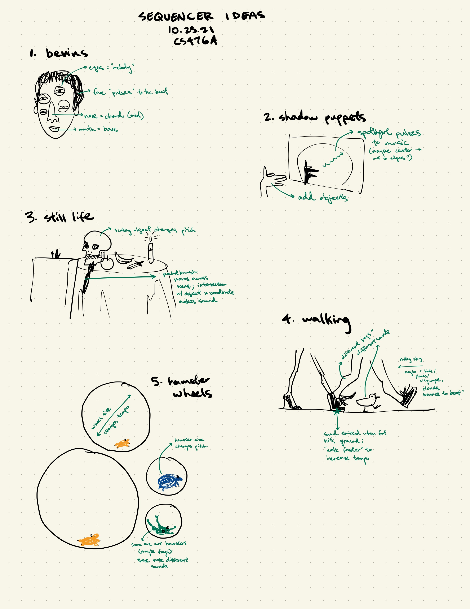
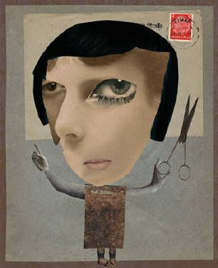

Homework 3: Music Sequencer
Milestone 1
I researched music and step sequencers, but most of the results were related to professional music synthesis, where the synthesized music is the object, and the synthesizer itself is designed for functionality. Thinking back to a reading response I did to Artful Design, I was reflecting on how design is not only working within constraints but also imposing new ones for aesthetics or playfulness -- in my case, I want my synthesizer to be fun, playful, and visually interesting, even if that comes at the expense of the ability to create complex audio tracks. I was inspired by the Chickenser tutorial (which was also a very helpful reference for getting started), which is silly and simple.
Here are my 5 sketches (in no particular order); I'll explain them in more detail below. Some of these ideas produce things which are capable of more interesting music than others.

Bevins
This idea is inspired by a character in George Saunders' historical fiction Lincoln in the Bardo. I read this book a while ago and the imagery has really stuck with me; I've been wanting to do some sort of project with it for a while. If you've never read the book, the important context here is that Bevins is a ghost, and in the book he is described as follows:
"Bevins" had several sets of eyes All darting to and fro Several noses All sniffing His hands (he had multiple sets of hands, or else his hands were so quick they seemed to be many) struck this way and that, picking things up, bringing them to his face with a most inquisitive Little bit scary In telling his story he had grown so many extra eyes and noses and hands that his body all but vanished Eyes like grapes on a vine Hands feeling the eyes Noses smelling the hands Slashes on every one of the wrists.
I've been really captivated by the visual effect of growing eyes and noses, constantly moving, and I can't find any good representations of how it looks in my mind.
I'm not sure I want to use this idea for my sequencer because, to be frank, I'm really attached to making something good out of this idea, and I'm not convinced my sequencer will be good enough for my own standards, but if I did, I'd make each eye / nose / mouth a different sound and allow size adjustment for pitch adjustment. I'm thinking the mouth would be some sort of bass, the nose some sort of chord, and the eyes various different noises that function as the "melody". I think I would somehow convey that the noises are played left to right, so that the nose and mouth noises can be played concurrently with the eyes.
Visually, I think it would be cool to import a bunch of eyes / noses cut out from images to create a 2D collage-like aesthetic, sort of like the Dadaism face collages: 
Shadow puppets
This next idea is pretty straightforward; the camera would capture some sort of big "wall" onto which the shadows of objects are projected like shadow puppets. The spotlight which casts the shadows would pulse from the inside out, and when the frontier of the spotlight intersects an object that object will make its noise. The user can place objects in front of the light source.
Unsure how easy it will be to get Unity to compute realtime shadows, but I think the effect will be cool -- someone on Reddit has done it before, how hard can it be?
Still life
This sequencer takes the point of view of someone painting a still life setup. A paintbrush moving left to right across the view (canvas in the foreground to convey context) will convey timing, and objects placed in the scene will make different sounds. Objects can be rescaled for pitch.
I'd love it if this also took on a 2D aesthetic, but ideally with some moody, dim lighting.
Walking
This sequencer takes "step sequencer" quite literally -- this one focuses on a sidewalk on which multiple people / animals are walking. Sounds are emitted when their feet hit the ground; different people / animals make different base noises. Changing the tempo at which they walk changes the tempo of the sound.
Hamster wheels
For this design the user can add hamster wheels and animals (optionally hamsters) inside the wheels. Different animals make different sounds. The size of the wheel corresponds to the tempo (maybe one point on the wheel will be colored, and whenever the animal steps over that point a noise will be emitted); the size of the animal corresponds to the pitch, and the type of animal corresponds to the type of noise.